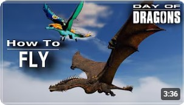
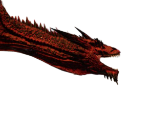
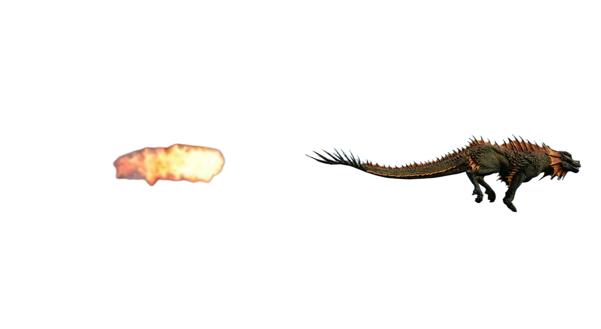

Once your dragon has reached the age of juvenile or older, you can trigger flight.

Below is a tutorial made by the amazing youtuber Lusewing to learn the controls.
For now, only Biolumin and Blitz Striker can hover. Hovering can be triggered by pressing G. Holding shift will make your dragon go up and holding space will make it go down. By holding W, S, A, D you can move to any direction you want. Blitz Striker will move way more up and down than forward and backward while Biolumin is like a helicopter and can easily move in all directions.
Currently, only Biolumin and Acid Spitter Drake can use sprint.
To sprint, simply crouch down with C before running.
As an Acid Spitter Drake, you can dive in deeper water by holding
Z to descend and X to ascend again.

